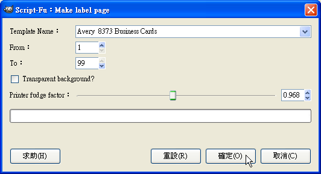

GIMP + GIMPLabels 製作名片

Note
|
軟體小檔案 名稱：GIMP |
◎ 下載 GIMPLabels
|
軟體小檔案 名稱：GIMPLabels |
我們在用 GIMP 自製名片的過程中，會用到 GIMPLabels 這個 Script-FU 來幫我們快速產生名片尺寸的空白圖層，並將多張名片合併成單張列印檔，因此必須先安裝 GIMPLabels 這個 Scirpt。
首先至官方網站下載 GIMPLabelsa。我們下載 labels.scm 版本即可，請在連結上按一下滑鼠右鍵後選擇下載，正確指令名稱會因你使用的瀏覽器而有所不同。
下載好 GIMPLabels 後，我們要將它安裝到 GIMP 中，直接將它丟入 GIMP 的 script 資料夾即可。在 Windows 裡，這個資料夾位於「C:\documents and Settings\使用者名稱\gimp-2.x\scripts」。將 labels.scm 丟入資料夾後，再到 GIMP 中的【濾鏡】->【Script-Fu】中選擇【Refresh script】就可以看到相應的功能。
◎ 製作單一名片
安裝好 GIMPLabels 後，我們就可以用 GIMP 開始製作名片了，請開啟 GIMP，並選擇【檔案】->【Create】->【Misc】->【Labels】->【Rect Label】。
然後在「Template Name」中選取所需要的 Label 格式，在這裡我們用的是「Avery 8373 Business Cards」, 然後按一下〔確定〕按鈕。
接著你就可以在 GIMP 中的編輯區域中，看到 GIMPLabels 已經產生好一般名片大小的空白圖層了。
接下來就是名片設計時間了，在此不贅述，簡單來說，就是將你要的圖片、LOGO和資訊通通放上這個空白圖層，不過要注意的是最好不要離邊線太近，以保留一些裁切的空間。
◎ 將名片合併成單一列印檔
設計好你的名片後，我們就可以將它排在單一空白列印檔中，讓我們可以直接使用名片紙來列印你剛剛做好的名片，不過可別使用人肉排列法辛苦地排版，GIMPLabels 只靠一個指令就可以幫你完成這個工作。要使用這個功能自動排列印檔，請選擇【濾鏡】->【合併】->【Make label page】。
接著一樣在「Template Name」中選擇你剛剛所選的 Template，然後按一下〔確定〕按鈕。

接下來你就可以在編輯視窗中，看到排好的列印檔了，將它存成 PDF 檔，把它拿去用名片紙列紙，你的自製名片就完成啦！